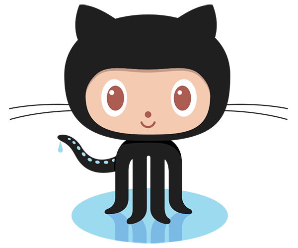
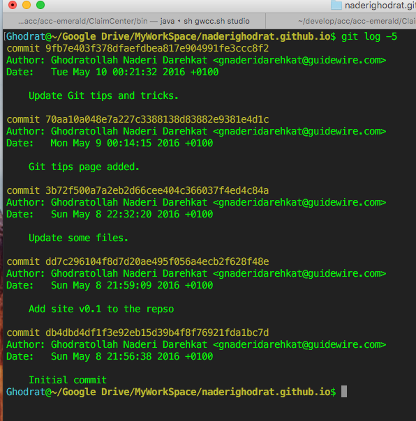
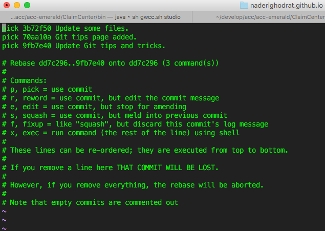
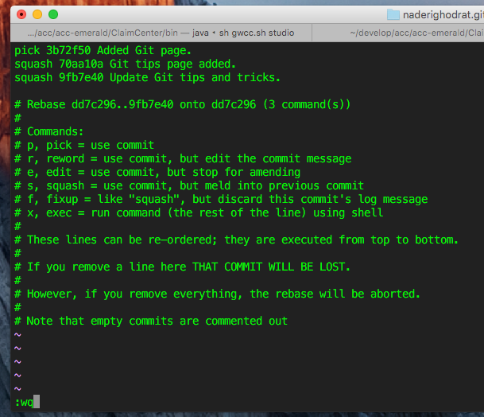
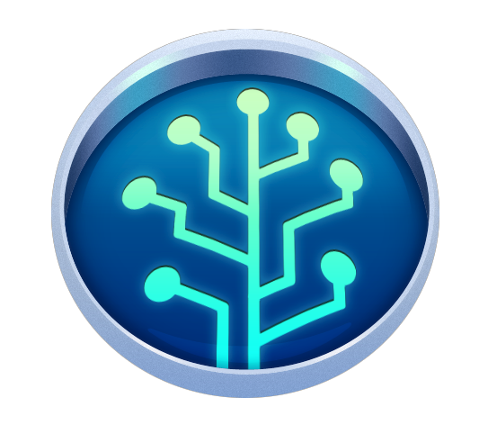

Git Daily Commands & Concepts
Git Daily Commands & Concepts
Git Branching Related Operations
Check out a remote branch:
$ git clone https://github.com/naderighodrat/naderighodrat.github.io.git
$ git branch -a
$ git checkout -b "branchName"
$ git status
Reset Branch
$ git reset --hardCreate a local branch:
$ git branch -d "localBranchName"Delete a remote branch:
$ git push --delete origin "remoteBranchName"Search for a "branchName" in branches:
$ git branch -a|grep gnaderi
[Search for "gnaderi" in branches list.]
Commit && Commit Message!
$ git commit -a -m "MessageText"
[I suggest to use an agreedo message format: "Domain/Feature:TypeOfFix:Jira-ID: A short explain." i.e "APEX:Bug:MTCH-228: OPC limitation for the array in the client."]
Push local commits to your git Server!
$ git push -u origin "YourBranchName"Merging Branch Commands and Tectonics.
Merging develop into the personal branch.
$ git fetch origin$ git merge origin/[branchName]Keep either file in merge conflicts:
$ git checkout --ours "fileName.ext" Keep their file in merge conflicts:
$ git checkout --theirs _layouts/default.html
More details here: keep-either-file-in-merge-conflicts
Merging your personal branch into the develop:
$ git checkout develop
$ git fetch origin
$ git pull
$ git rebase origin/[YOUR_BRANCH]
$ git push -f -u origin/develop
Merge your branch and keep all your commits as ONE commit message :
$ git merge --squash [YOUR_BRANCH]
Compare and Diff two branches.:
$ git merge --squash [YOUR_BRANCH]
 Reset/Revert/Amend a commit in a branch tips
Reset/Revert/Amend a commit in a branch tips
Reset a branch to a specefic commit:
$ git checkout cc-mitchell-sa-dev-gnd
$ git reset --hard 3c6ecdaaaa169e1a8fd1f0ce6b7ff08fa948fc98
$ git push -f origin cc-mitchell-sa-dev-gnd
Change a commit message afte pushed to server!:
$ git commit --amend -m "New commit message"
$ git push -f origin [YourBranchName] Stash tips
Stash your changes and switch the branch or pull:
$ git stash save "name or title"
$ git stash list // list all the stashed
$ git stash pop // or git stash pop stash@{0}
Change a commit message afte pushed to server!:
$ git commit --amend -m "New commit message"
$ git push -f origin [YourBranchName]Squash your latests commits into one:
This is a great way to group certain changes together before sharing them with others.
~Here’s how to squash some commits into one. Let’s say this is your current
git log:

Now, you want to squash your last three commits in one to make your history look
pretty.The command to accomplish that is:
$ git rebase -i HEAD~3
This will open up your editor with the following:

Change all pick in beggingin of all commist to Squash except that one that you want to be the presenter or You can change the message!

Press Escape and ":wq" and perss Enter.
It will show a simliar page with commit messages, put a custom message and
continue...
Run a git log -3 : You will see your commit changes and consider as one commit.
$ git log -3
Don't forgot that at end You need to push it to git server!
$ git push -u origin master
 Other Useful Git Tricks
Difference between two commit as a .patch file:
$ git diff e71516d12e818e1676db6854e11a8bbcabd54ca2 f0e2dfbf64f28011a06d89cb500f988ad3d96f0a > ~/dif_file_result.patch
Apply Patch created by Git:
$ git apply ~/dif_file_result.patch
Create Patch from stashed contex:
$ git stash show -p stash@{0} > ~/updateUserController.patch